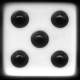

I know! I'll use my
Higher-order functions to
Order higher rolls.
In this project, you will develop a simulator and multiple strategies for the game of Pig. You will need to implement some higher-order functions, experiment with random number generators, and generate some ASCII art.
Pig is a dice game with simple rules: Two players take turns rolling dice and scoring points until one player reaches 100 points. Each turn has a turn total, which is a tentative number of points the player has accumulated so far during the turn (this is different from the turn score, which is what the player actually scores at the end of the turn). A player's turn consists of a sequence of actions. There are two legal actions:
roll: If the player rolls a
1: the player scores 1 point and it becomes the opponent's turn.
anything else: the roll is added to the player's turn total, and the turn continues.
hold: The player scores the turn total and it becomes the opponent's turn.
A player's turn will end if (a) the player rolls a 1, or (b) the player holds. Otherwise, the outcome of each roll will be added to the turn total, and the player can once again choose to roll or hold.
Someone has posted a Pig instructional video. Note that they give 0 points to a turn that ends in a roll of 1, while we give 1 point.
In this project, you will create a variant of Pig that uses two different dice. Players roll a 6-sided die, unless the sum of the scores of both players is a multiple of 7 (0 included), in which case they roll a 4-sided die. This sum of scores does not include the turn total.
In the later parts of this project, you will be creating various plans to play the game. We will use two terms: strategy and tactic. Think of a strategy as a plan for the entire game. In contrast, a tactic is a plan for a single turn; it determines what actions the player should choose in that specific turn. A strategy is essentially a repertoire of tactics; each player enters the game with a single strategy, and each turn a player picks a suitable tactic from their strategy.
In terms of code, a strategy is a higher-order
function that returns a tactic function to respond
to the current game state. A tactic is itself a
higher-order function that returns an action (either a
roll function or a hold function).
This project includes three files, but all of your changes will be made to the first one. You can download all of the project code as a zip archive.
|
A starter implementation of Pig. |
|
|
Functions for rolling dice. |
|
|
Utility functions for CS61A. |
This is a two-week project. You are expected to complete this project individually - no partners are allowed. However, you will have a project partner for the final two projects.
Start early! The amount of time it takes to complete a project (or any program) is unpredictable. Ask for help early and often -- the TAs and lab assistants are here to help.
The project is worth 15 points. To avoid fractions, however, we have assigned "inflated" points that add up to 25. We will simply weight the grading calculation by multiplying the nominal score you receive by 0.6.
The only file that you are required to submit is the file called
pig.py. You do not need to modify any other files to
complete the project. To submit the project, change to the directory
where the pig.py file is located and run submit proj1.
We will set up an autograder that runs your code through different
test cases and sends out the results in an e-mail.
For the functions that we ask you to complete, there may be some initial code that we give you. This is solely designed to help you get started: if you would rather not use the provided code snippet, feel free to delete it and start from scratch.
However, you may not modify any other functions. Doing so may result in your code failing our autograder tests. Also, do not change the function signatures (argument order, number of arguments).
In the first phase, you will develop a simulator for the game and a basic strategy.
The first step in implementing a Pig simulator is to specify the rules of the game. You will implement each of the legal actions. Remember that a turn consists of a sequence of actions and ends either when a player rolls a 1 or holds. Read the comments of the functions you are implementing, as they specify the precise behavior expected.
Problem 1 (2 pt). First, implement the roll function
in pig.py, which computes the result of rolling a
particular outcome. Remember that no points are scored unless the
turn ends! On successful (greater than 1) rolls, points are only
accumulated in the turn total.
Then, implement the hold function
in pig.py, which computes the result of holding.
Holding actually doesn't care about the dice outcome. Nonetheless,
this argument is provided so that hold has the same
signature as roll. Similarly, hold must
return a turn total even though the result is irrelevant to the
game. Always return a turn total of 0.
You can verify your work by checking that the doctests
for roll and hold pass. To do this, run the
following line from your terminal:
python3 -m doctest pig.py
Notice that roll and hold are not the only functions
checked. In future problems, you can check your work on problems
that provide doctests by running the line of code above in your
terminal.
Problem 2 (2 pt). Implement the take_turn
function, which simulates a complete turn that may include multiple
rolls. This function takes a tactic as an argument,
which itself is a function (see next paragraph). The return value of
take_turn is the turn score, the total number of
points the player scored at the end of the turn.
A tactic is a higher-order function that takes one
integer argument, the current turn_total, and returns
one of the two functions: either roll or hold,
both of which you implemented in Problem 1. A tactic is a
turn-specific plan that determines which action the player will
choose based on the current turn_total.
A dice is also a function. (We would call it a "die",
but that's too morbid). It takes no arguments and returns an
integer: the outcome of a die roll.
Important: Your implementation of take_turn
should always call the dice function exactly
once for every action, including hold. If you don't
do this, various tests will break later in the project!
For now, you can ignore the arguments who and
comments, which you will use later.
Try testing your take_turn (via
take_turn_test) by issuing the following command at
the terminal:
python3 pig.py --take_turn_testIn shorthand, you can also issue:
python3 pig.py -tNote: This is not the doctest, but a convenient tool to help run tests. You still need to run doctests to debug your code.
The tactic that is provided by default will roll until
the turn total reaches at least 10, and then hold.
Hint: We have provided some tools in ucb.py to
help you understand what is happening in your code. If you decorate
a function with @trace, then a line of output will be
printed every time that function is called. If you call log_current_line(),
then the current line number will be printed. Finally, if you call interact(),
then you will receive an interactive prompt in the current
environment.
Problem 3 (1 pt). Implement a better take_turn_test,
which validates the correctness of your take_turn
implementation. To do so, read the dice.py file,
which provides a function called make_test_die. Test
dice are not random like regular dice. Instead, you can specify the
exact sequence of outcomes returned by successive rolls. The
docstring for make_test_die shows examples.
Using assert statements, test that the default tactic
scores exactly 10 points when rolling a 4, 6, 1. Add additional
tests to ensure that the tactic gives expected outcomes with various
roll sequences.
Problem 4 (1 pt). Change the default value for comments
in take_turn from False to True.
Then, call commentate after the result of each action
is computed, whenever comments is True. You
will need to read the docstring for commentate to make
this call correctly.
After you start calling the commentate function, you
should see a transcript of events when you run pig.py,
which includes statements like "Someone did something... Someone
now has a turn total of 7 points." Details of the game events are
currently rather vague.
Problem 5 (2 pt). You will now implement describe_action,
which takes an action function and returns a string describing that
action. Edit the body of describe_action so that its
doctest passes. For any action that is not roll or hold,
the commentator should announce that an illegal action was taken.
When you are finished, the doctest for describe_action
should pass, and your commentary should have informative action
messages when you run take_turn with comments
set to True.
Hint: You can figure out what a function is without calling
it, using == .
Problem 6 (2 pt). You will now implement draw_number,
which draws the outcome of a die using text symbols. Such pictures
are called ASCII art.
Note: The sides with 2 and 3 dots have 2 possible depictions due to rotation. Either representation is acceptable.
The drawing facility is actually written for you in draw_die.
However, it uses a bunch of Python syntax that we haven't yet
covered! You'll have to use this function as a black box, just by
reading its docstring. Programming often involves using other
people's code by reading the documentation.
When you are finished, the doctest for draw_number
should pass, and your commentary should produce ASCII dice pictures
when you call take_turn with comments
equal to True.
You're almost ready to implement a full game of Pig!
Problem 7 (2 pt). First, implement make_roll_until_strategy.
This is a higher-order function that returns ("makes") a strategy.
Strategies: Recall that a strategy is like a "game plan" that
holds a set of tactics. Depending on the player's score and the
opponent's score (i.e. if the player is winning or not), the player
will choose a specific tactic to use during this turn. In terms of
code, a strategy is a higher-order function that takes
two arguments: the player's score and the opponent's score, and
returns a tactic function.
Note that make_roll_until_strategy itself is not the
strategy, but a function that returns a strategy.
Your implementation of make_roll_until_strategy will
return a very simple strategy: so simple that it will
effectively ignore its two arguments. This simple strategy will
return a tactic that always chooses to roll unless the specified
turn_total goal has been reached. In other words, the
strategy that make_roll_until_strategy returns will
roll until it reaches a certain turn_total.
Run the doctest to verify your work.
Problem 8 (3 pt). Finally, implement the play
function, which simulates a full game of Pig. Players alternate
turns, each using the tactic returned by their own strategy
function, until one of the players reaches the goal score. When the
game ends, play should return 0 if the first player
wins, and 1 otherwise.
IMPORTANT: Remember that you must supply the correct
die to the take_turn function. For every turn, check if
the sum of both players' scores is divisible by 7. If it is, you must
supply a 4-sided die. If not, you supply a 6-sided die as usual.
As you work, you can add print statements and
use @trace to see what is happening in your code.
To test your implementation, enter the following line from your terminal to start an interactive game of Pig:
python3 pig.py --play
Congratulations! You have finished Phase 1 of this project!
In this final phase, you will experiment with ways to improve upon
the basic strategy. To do this, you will first implement a
small framework for testing strategy functions against the
roll-until strategy. We will use the strategy returned by
make_roll_until_strategy(20)
as a baseline upon which we hope to improve.
comments
back to False in the definition of take_turn,
so that you are not overwhelmed with output.
Problem 9 (2 pt). Implement the make_average
function. This higher-order function takes a function fn
as an argument, and returns another function that takes the same
number of arguments as the original. It is different from the
original function in that it returns the average value of
repeatedly calling
fn on its arguments. This function should call fn
a total of num_samples times and return the average of
their results.
Note: If the input function fn is not a pure
function (for instance, the random function), then
make_average will also not be a pure function.
To implement this function, you need a new piece of Python syntax! You must write a function that accepts an arbitrary number of arguments, then calls another function using exactly those arguments. Here's how it works.
Instead of listing formal parameters for a function, we write *args.
To call another function using exactly those arguments, we call it
again with *args. For example,
>>> def printed(fn):
def print_and_return(*args):
result = fn(*args)
print('Result:', result)
return result
return print_and_return
>>> printed_pow = printed(pow)
>>> printed_pow(2, 8)
Result: 256
256
Read the docstring for make_average carefully to
understand how it is meant to work.
Problem 10 (2 pt). This problem is about understanding code
and designing your first experiment.
Read compare_strategies and eval_strategy_range
and understand what it is doing. You will use these functions to answer
the following question:
Recall that a roll_until strategy (from Problem 6)
will keep choosing the roll action until it
reaches its turn_goal. Within the range
15 to 25 (inclusive), which value of turn_goal
achieves the best win rate?
In run_strategy_experiments,
use eval_strategy_range to find the best turn_total.
You should compare your roll_until strategies against the
baseline strategy, which eval_strategy_range already does.
Print out what eval_strategy_range
determined was the best value.
To test run_strategy_experiments(), go to the terminal
and enter the following:
python3 pig.py --run_strat_exps
Now you will implement three strategies that improve upon the
baseline. Some of the experiments may take up to a minute to run.
You can always reduce the number of random samples in make_average
to speed up experiments.
Tip: If you forgot to change the comments to
False in take_turn, running
run_strategy_experiments will result in hundreds of
lines of output to the terminal, which may result in the process
taking much longer. You can terminate the Python process by doing
Ctrl-C. In general, issuing a Ctrl-C
will try to terminate the active process.
Problem 11 (2 pt). Implement the make_die_specific_strategy
function. This function takes two turn goals, four_side_goal
and six_side_goal, and returns a new strategy that
checks to see which die is being used (either 4-sided or 6-sided)
and returns a roll-until tactic that stops at the corresponding turn
goal. Keep in mind that a four-sided die is only used when the sum
of your score and your opponent's score is divisible by 7. The idea
here is that holding early with a 4-sided die avoids 1's.
Add an experiment to run_strategy_experiments that
evaluates different turn goals for a 4-sided die, in the range 5 to
15.
Problem 12 (2 pt). Implement the make_pride_strategy,
which only stops rolling when two conditions are true: the turn
total is at least turn_goal and the player's score
after holding is at least margin greater than the
opponent. The idea here is that riskier rolling is justified when a
player is behind.
Add an experiment to run_strategy_experiments that
evaluates different margins for your new strategy, in the range 0 to
10.
Problem 13 (2 pt). Implement final_strategy,
which combines these ideas and others to achieve a win rate of at
least 0.60 against the baseline roll-until-20 strategy. Here are
some hints:
You're implementing a strategy function directly here, as opposed to a function that returns a strategy. If your win rate is usually (i.e., half the time) above 0.60, you have answered the question successfully. You can test this entering the following line in your terminal:
python3 pig.py --final_strat_test
Note: This test can take a couple of seconds to complete.
Congratulations, you have reached the end of your first CS61A project!
Acknowledgments: The suggestion of using Pig as a CS project and the dice image came from Todd Neller.